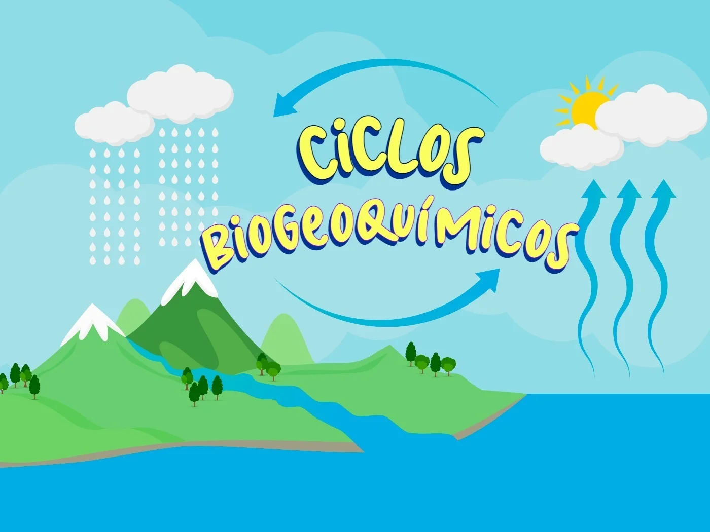

El Flujo de Energía
La Tierra funciona con base en dos procesos fundamentales regulados por los seres vivos:
- El flujo de energía: La energía no se crea ni se destruye, solo se transforma. El 99% de la energía solar recibida en la Tierra es retornada al espacio exterior por los procesos de reflexión e irradiación, el 1% restante entra al subsistema biológico donde se captura y transforma a energía de biomasa por la fotosíntesis, la energía se dispersa mediante la cadena alimenticia. (La energía inicial se transforma en energía menos útil).
- El ciclado de las sustancias o materias: La importancia de estos ciclos biogeoquímicos es que al ciclar las sustancias las renuevan, purifican y conservan para definir la productividad y sustentabilidad de los ecosistemas. Los intercambios de sustancias químicas en la biosfera ocurren de la fase ambiental (elementos en forma inorgánica) a la fase orgánica (el elemento forma parte de seres vivos) y de nuevo se retoma el ciclo. El carbono, hidrogeno, oxigeno, nitrógeno, fosforo y azufre son los mayores contribuyentes de los tejidos de los organismos y componen el 95% de la biosfera (macronutrientes).
Los 3 tipos de ciclos biogeoquímicos conectados son:
- Gaseosos: las sustancias circulan entre la atmósfera y los organismos vivos, su velocidad de reciclado es mayor. Principales ciclos son del oxígeno, carbono y nitrógeno.
- Sedimentarios: las sustancias químicas circulan entre la corteza terrestre, la hidrosfera y los seres vivos; los ciclos de reciclado son demasiado lentos. Los principales ciclos son del fósforo y azufre.
- Hidrológicos: esta ligado a los otros ciclos ya que sirve como medio de transporte para el movimiento de los nutrientes hacia el interior y exterior de los ecosistemas.
Con el fin de mantener la sustentabilidad de los recursos y productividad de los ecosistemas se debe respetar y cumplir la regla de sustentabilidad, la cual estipula que la velocidad de los procesos de reciclado, renovación, purificación, reemplazo y conservación debe ser SIEMPRE MAYOR que la velocidad de los procesos naturales y antropogénicos de consumo, extracción, contaminación, destrucción, degradación, fragmentación y abatimiento.
